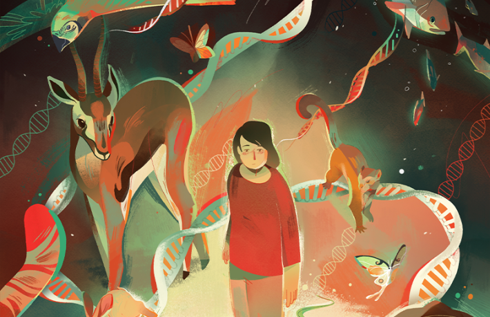
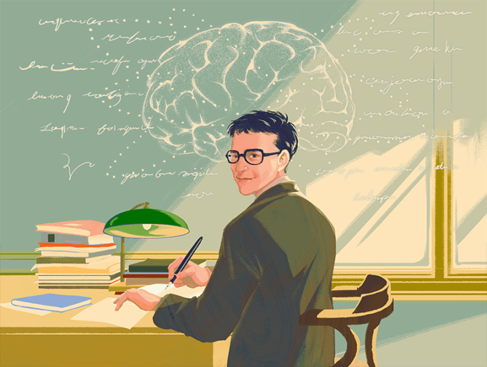
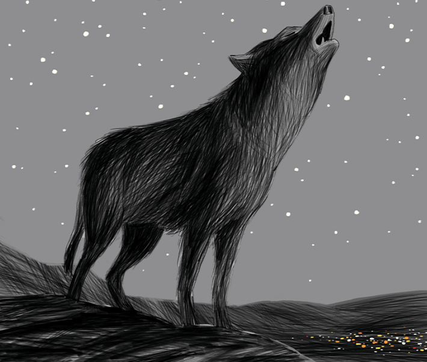
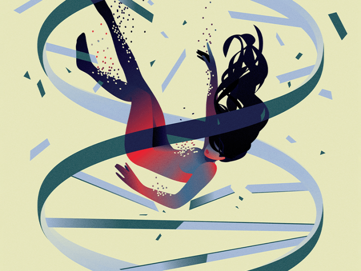
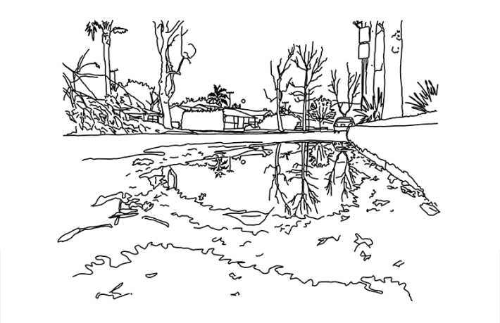
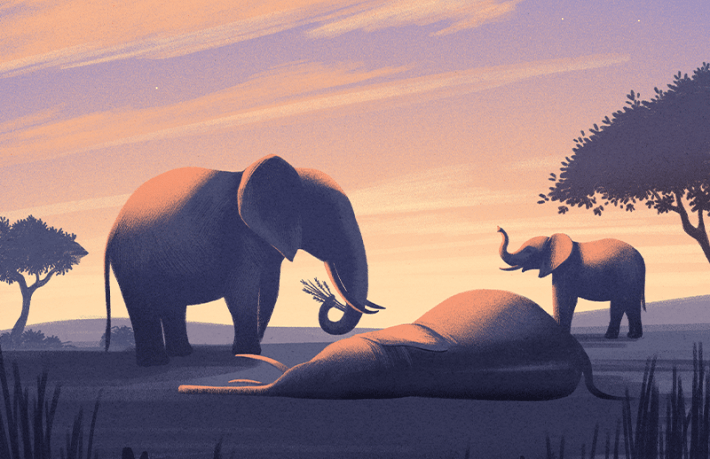

As Einstein saw it, this is where science begins: “The most beautiful thing we can experience is the mysterious. It is the source of all true art and science. He to whom this emotion is a stranger, who can no longer pause to wonder and stand rapt in awe, is as good as dead: His eyes are closed.”
Einstein's view was an inspiration for “More Than a Feeling,” a Nautilus article this year by Sean B. Carroll, in which the evolutionary biologist portrays a wonderful world of scientists who found their callings in the emotion of awe. That spirit, too, drives our journalism and essays, and as 2025 winds down, we look back at some of the beautiful insights and writing that defined Nautilus this year.

On a sticky, late-spring night in parts of the eastern United States, you might witness one of the wonders of the animal kingdom: a constellation of hundreds of fireflies blinking in unison.


Illustration by Mathias Ball
We needn’t get down to neurons and base pairs and biochemicals to be reminded of our animalness. Sometimes it’s as simple as a 4-year-old Homo sapiens standing in quiet stillness, mouth agape, gazing up at the towering Barosaurus and Allosaurus in the foyer of the American Museum of Natural History, momentarily unaware of the buzz of other humanity around her.

Maybe the emergence of beings like us is not hindered by hard steps but is simply slow. Perhaps the universe is teeming with alien civilizations—or will be before very much longer.


Illustration by Cornelia Li
In the beginning, I was chasing Peter Putnam the fantasy, a forgotten janitor who’d discovered the structure of the mind. But the deeper I read, I found myself thinking, Wait, did a forgotten janitor seriously discover the structure of the mind?

Bullie was the most caring in the group. Whenever someone else was ill, she would sit with her and comfort her. Bram and Wezel had the strongest friendship. There was just the two of them after their friends had died, and they did everything together: eating, sleeping, pottering about like an old married couple. Bullie, Bram, and Wezel were three of the 25 ex-laboratory mice with whom I lived between 2020 and 2023.

Jackson Pollock’s paintings look like beautiful accidents.

As I walked through the freezer room, I continued to think about my dad’s brain, nestled in a shelf among other frozen brains, and my fear gave way to a strange mix of wonder and sadness. The once active neurons that fired electrical and chemical signals from axons to dendrites inside the crevices and folds of the left frontal lobe, home to the language center, were now quiet. The memories produced in the hippocampus were now frozen. These parts worked in concert to convert my dad’s experiences into the language of more than 4,000 essays and book reviews, two novels, and a memoir about his life as a New York Yankees fan.


Illustration by Jorge Colombo
Built on the foundations of conservation and science, shaped by industry and politics, wolf reintroduction is a huge and messy paradox, a noble intention to save the wolf soaked in the wolf’s own blood.

To stay alive in an Ice-Age environment, early humans would have needed cultural and physical traits foreign to their ancestors in Africa. Analysis of ancient DNA suggests these early humans adapted to their icy surroundings with physical traits passed on by their former mates: Neanderthals.

It appears that moons actually might represent the most robust habitats in the galaxy.


Illustration by Maria Fedoseeva
It’s impossible to know exactly when each of the five mutations happened. When, deep in my marrow, one thing after another went awry, and divided my life. Like all people who have been ill, my life is split into Before and After. The mutations must have happened in the Before, because that’s how leukemia works.

Asclepius, a Greek demigod and physician, was said to have learned the secret of bringing the dead back to life from a snake. Christianity took pains to suppress the cult of Asclepius and demonize serpents, in scripture and art, which is one of the reasons humans learned to hate snakes.

One evening, a full moon hung over the rainforest. Amid the sounds of monkeys, grasshoppers, and the shamans’ chants to forest spirits, Bruce Damer saw madre ayahuasca. He asked her, “Would you like to do this? How about we join together and travel and try to figure out how we were all born?”

It was a hot day, and it smelled warm, resinous, homey, and alive. Even in that small patch of forest, each tree—piñons and junipers, bristlecone pines, and cypress—smelled distinctive, each plant had its own olfactory fingerprint, and together they created a complex and resonant symphony of a very particular smellscape.

Chris Lemons, a saturation diver from England, is in the rare position of having witnessed his own death.

Philosophers are grappling with the idea that life and death may not be the only states of being in which organisms can exist.

Across dinner tables, disciplines, and research sites, stories converged on a clear and sobering reality: Antarctica’s ice knows no politics, yet it faithfully records the consequences of our choices.

Today, spiritualism and mainstream science having parted ways, physicists have proposed a new way to “see” into a new dimension—by looking deep into the hearts of collapsed, dead stars that have been behaving strangely.


Illustration by A. Kendra Greene
A few more miles and the atmosphere turns golden, rays diffuse and refracted, a sepia glow. By the time we are moving past downtown L.A., it does not matter that the windows are up. A headache is starting. I feel the change of the air in my lungs. The diminishing. The tightening. The hurt. The light outside is stunning, though, gorgeous, the way an ice storm is a kind of guilty pleasure—so beautiful and so terrible, so patently disaster or the precipice before.

The human body is a wonder of adaptations. Our skin’s blood vessels swell to expel excess warmth. Sweat glands release droplets of water that free heat as they evaporate. But what happens when the cells inside our bodies get too hot?

Chris Warren, aka the Echo Thief, sits in a chair in the center of his sound lab and sings. Each note hangs in the air, layering onto the next like a cake and building into a complex chord, creating a rich cathedral of sound.

Today, the anchoveta still swim, though in fewer numbers, and the seabirds still wheel above them. But their future, like ours, depends on whether we will grind them into meal until none remain, or whether we will let them remain what they have always been: the living silver of the sea.


Illustration by Myriam Wares
Perhaps no other animal is capable of being annoyed at a loved one’s irritating habit, then feeling sadness at the thought of how someday that habit will be remembered with affection and regret. What is more important, though: the differences between how humans and other animals understand death, or the similarities? To me it is the latter. The common essence of life’s preciousness and the finality of its loss.

Declining vaccination rates might paradoxically be a consequence of vaccines’ incredibly successful and safe track records: Most people alive today have no first or even secondhand experience with many of the illnesses before vaccines were available.

According to myth, ghostly blue lights often called will-o’-the-wisp can trick travelers wandering through cemeteries or wading through wetlands, leading them off track and toward their doom.

Lightspring / Shutterstock
As we enter the age of increasingly sophisticated human-chatbot interactions, preserving the uniqueness of our individual intellects may be the most important challenge humanity faces.

On the Kenyan reserve, I felt melancholic knowing that when Fatu and Najin died, northern white rhinos would be gone forever. But thinking about the ordeal they’ve been through, the Jurassic Park-like efforts to resurrect their species, and the kinds of lives their offspring might lead, I was left to reflect on something else that Thom van Dooren, an environmental philosopher, said to me. “It bears considering whether it is better to just let the animals go extinct.”
I feel you, universe. 
Lead collage by Tasnuva Elahi; with illustrations by Jorge Colombo, Mathias Ball, Cornelia Li, Deena So Oteh, Tara Anand, Myriam Wares, Ellen Weinstein; photos by James Wills, Jan Zwilling and an image by Lightspring / Shutterstock.
References
- Original Article: https://nautil.us/the-most-beautiful-science-of-the-year-4-1256491/